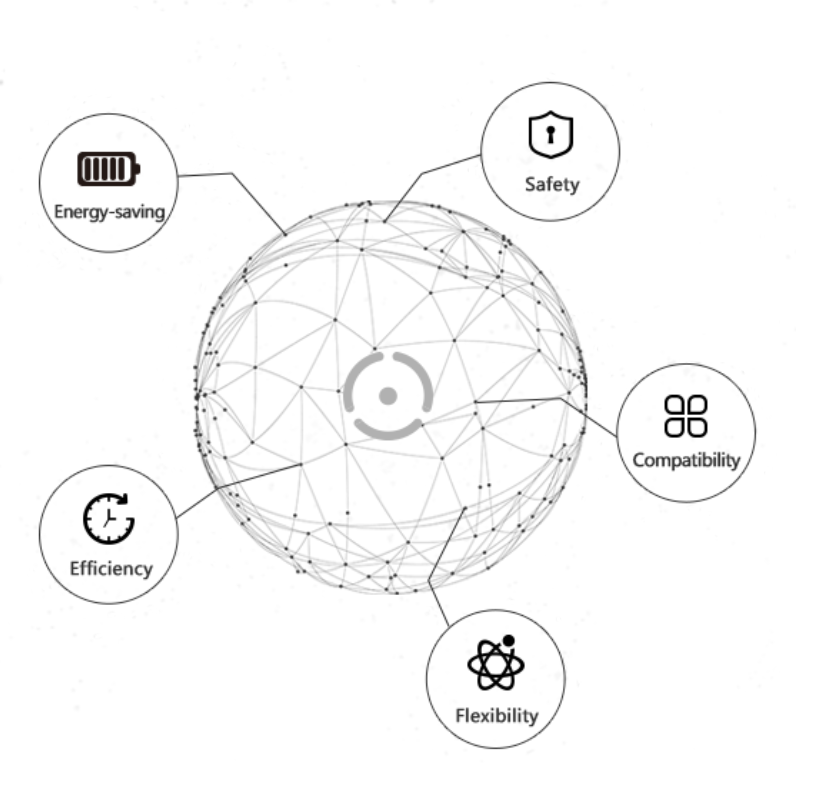

研究领域
区块浏览器
开发者
公告
语言
English
中文
한국어
联系
Github
Seele Stem 子链 Beta 1.0 发布!
Seele由抗ASIC的MPoW算法和Seele可扩展分片技术提供支持，以高吞吐量并发性为目标，目前在Seele主网中以2000 TPS为起点，并且随着需求的增加具有高度可扩展性。 Seele全面兼容EVM智能合约.
Seele是自03/31/2019上线的先进公共区块链基础设施项目。我们的目标是创建一个安全，高性能和可扩展的区块链。

矩阵工作量证明共识算法
MPoW（矩阵工作量证明）是一种由SeeleTech开发并在Seele的主网上实现的创新PoW共识算法。与传统的PoW共识算法相比，MPoW要求矿工从使用n个哈希构成的矩阵中使用哈希函数来计算子矩阵的行列式，而不使用蛮力哈希来找到目标。它由几个步骤组成，这些步骤可以有效地防止ASIC和GPU支配网络。